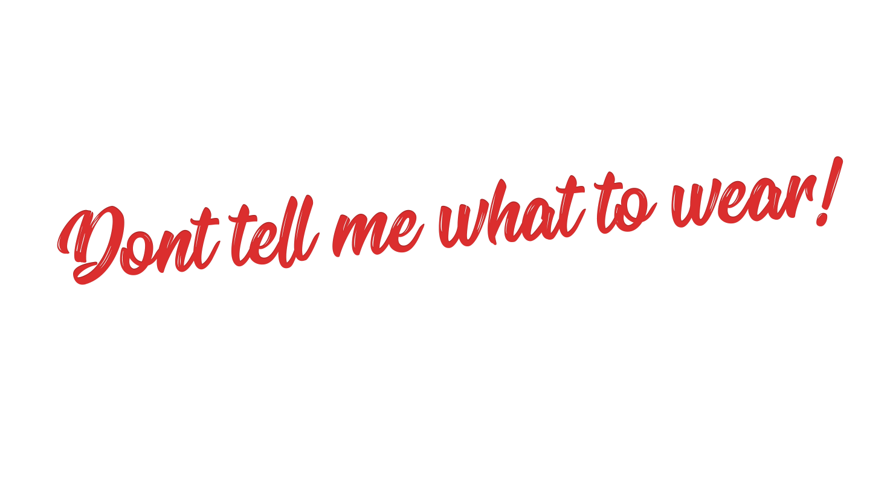

First time I was slut-shamed was when I was 10 years old.
Well, to be fair I am sure it has happened earlier than that, this is just the first one I remember. I was eating my ice cream and rolled in my roller skates down the street, while wearing a mini-skirt. How dare I...
My peers were attending a religious class. I too, usually would join them, but this particular Sunday I just didn’t feel like it.
Later that day I was advised that our teacher said ( to the whole class) that I will burn in hell for wearing a short skirt.
Everybody nodded. How dramatic, I thought.
Fast forward to today and this story still sounds dramatic.
Isn’t that peculiar;
a 10 year old girl will be transported to hell for wearing a mini skirt and an old man gets a pass for sexualizing a child?
Ugh, it’s normal to get refused education, friendships and in some countries freedom if you wear distracting clothing. My (terrible) teacher is not an isolated case. People threaten, scream and attack all under the demise of;
“I know what’s best for you”.
Slut-Shaming In Society
Slut-Shaming is so prevalent in our society that I could probably get a book deal just documenting them. I am aware that writing a book would take for ever and it would be triggering to a lot of fashionistas, including me. So, instead here are a few examples that managed to trigger me as if it's no ones business;
P.S. You can just tap on the examples, or skip them if you prefer not to be triggered.
An open letter
There was an open letter that circled around the internet a few years back on this topic; It was a letter by a woman to women.
In a nutshell; a journalist pleaded to women to stop wearing unicorn shirts. She stressed that it’s antifeminist to wear unicorns. She claimed that no self respecting adult would infantilize themselves like that. She used Amelia Earhart as an example of a self respecting woman.
It’s ironic that she used a famous pilot from the early 1900s to support her madness since Amelia was notorious for wearing pants. In the early 1900’s pants-wearing women were considered silly, often imprisoned and absolutely disrespectful. It’s all about the context.
Slut-shaming was palpable in this open letter. It’s logic made no sense and people concluded that the logic rarely accompanies slut-shaming. But, that’s just one misguided person, right?
Nope.
As seen on reddit
A few months back, a woman complained to Reddit about a friend who ruined her party. She was offended that a 20-something old girl would wear Marvel inspired clothes and disrespect her all grown-up party like that. She wondered if she overreacted...
Reddit’s upvotes concluded that she did.
As seen in the world
In Cambodia a woman was charged with pornograhy for wearing sexy clothing. In Turkey a woman was slapped by a pedestrian cause she wore something too sexy, in Iran women are not allowed to go anywhere without scarves.
World is yet to figure out the best way to react.
Slut-shaming comes in many ways but the message is always the same:
“Be good to us. Easy on our eyes. Not too easy. Look friendly. Not too friendly. Exist for us!”
This kind of behaviour often comes from a human urge to control reality, and it’s usually justified as a measure of protection.
So, is slut-shaming just a perverse act of protection or is there more to it?
Actually, science shows that slut-shaming has more to do with biology and less with the altruistic instincts.
How Does The Brain Process Slut-Shaming
Basically, bodies are wired for survival. Your brain needs to be confident that you will stay safe and survive. No matter what.(1)
To be confident all you need is to raise levels of your self-esteem.(1) I know, easier said than done.
Researchers claim that there are many ways to raise your self esteem. One easy way is to be part of a distinctive group. Another is to downplay the qualities of your own group.(2)
To raise your self-esteem your brain will need to run through a few neural paths.
Here is where it gets interesting; part of the brain that deals with self-esteem is connected with the part of your brain that deals with feelings of motivation and reward.(1)
(self esteem neural pathway in all its majesty)(1)
Ergo, brain awards you when you downplay qualities of people around you. To put it simply; slut-shaming is a cheap trick to get a confidence boost.
It all happens all in a split of a second. Brain registers something out of the ordinary, gets scared that it might be part of a losing team, and puts you in a fight or flight mode.
This mode might trigger a knee jerk reaction such as shaming a little girl for wearing a short skirt, freaking out over a funky shirt, or imprisoning a human being.
Knee jerk reactions are reserved for your knees and have no place in brains. Brain can trick you into believing that slut-shaming is good because it creates that “phew, I got this” feeling.
The funny thing is, you do “got this”! People that wear different stuff from you, just wear different stuff. No reason for drama. No reason for you to become a slave to your emotions.
What Slut-Shaming Does To Mental Well-Being
No matter why and how slut-shaming happens the act itself can cause trauma. Slut-shaming toys with our basic human need to belong.
Research has shown that isolation from a community is associated with greater social stress and depression.(3)
Even when we succumb to social pressure, when we decide to mold ourselves to suit someone elses eyes, and perhaps wear something "acceptable" we suffer because we internalize the shame that got us to change. Then experiences of self-criticism and feelings of inadequacy become just a way of life. (4)
To conclude, slut-shaming doesn’t motivate prosocial behaviors; it fuels social withdrawal and low self-esteem and is usually caused by primitive fear.
Long story short; don’t tell anyone what to wear!
